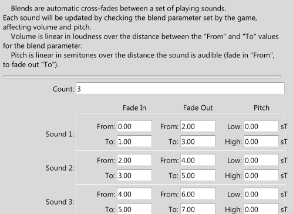

|
Blends |
| Navigation |
Sets up the the crossfades and pitchblends between multiple sounds, for use in car or other engine sounds.

The basic idea is that for each sound, you are saying "When the variable is this, start fading in, and when the variable is this, be at full volume." Similar for fading out.
In the above image, the first sound is cross fading in to the second sound between the values of 2 and 3. So when the game sets the variable "BlendName" to 2.5, the first sound will be at half loudness, the second at half loudness, and the third will be silent.
For pitch bending, the "Lowest" value is the pitch at the first point the sound is audible - the "From" value for Fade In. The "Highest" is the pitch at the last point the sound is audible - the "To" value for Fade Out.
 Busses Busses |
 Settings Settings |
 Ramps Ramps |

|
Miles Sound System 9.3b
E-mail miles3@radgametools.com for technical support. Copyright © 1991-2012 by RAD Game Tools, Inc. All Rights Reserved. |

|